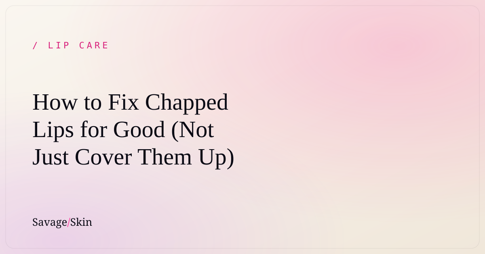

How to Fix Chapped Lips for Good (Not Just Cover Them Up)

If your lips are stuck in the dry → peel → apply balm → repeat loop, here's the truth: most "lip balms" cover up chapped lips without actually fixing them, and some make it worse. To fix chapped lips for real you need to do three things — stop the habits drying them out, actually treat and seal in moisture (not just coat), and be consistent for a week or two. Here's exactly how.
Why your lips get so dry in the first place
Lip skin is thin, has barely any oil glands, and zero protection from the sun — so it loses water fast and damages easily. When that protective layer breaks down, you get tightness, flaking, peeling, and cracks. The usual culprits:
- Licking your lips. Feels good for 2 seconds, then the saliva evaporates and takes more moisture with it. This is the #1 chapped-lip trap.
- Weather. Cold, wind, dry heat, and AC all pull water out of your lips.
- Dehydration. If you're not drinking enough water, your lips show it first.
- Mouth breathing (sleeping, stuffy nose, working out).
- Irritating ingredients. Some balms contain menthol, camphor, or strong fragrance that feels tingly-nice but is actually irritating and drying. (Ironic for a "lip balm," we know.)
- Peeling/biting the flakes. This rips healthy skin and restarts the whole cycle.
The "skinification" shift: treat your lips like skin
Here's the mindset change that fixes everything: your lips are skin, so treat them like skin. You wouldn't fix a dry face by smearing wax on it once a day — you'd hydrate it and seal it. Same logic. This is the whole "lip skinification" movement: lip products that treat (hydrate, repair, protect) instead of just sitting on top. It's why a hybrid lip treatment that works as a daily balm AND an overnight mask outperforms a basic waxy stick.
The routine that actually heals chapped lips
1. Stop the damage
Quit licking and biting. Drink more water. If your balm tingles or smells strongly of menthol/mint, switch — that's irritation, not healing.
2. Gently buff (only if peeling, max 1–2x a week)
If you've got flakes, a soft damp washcloth or a gentle lip scrub once or twice a week smooths them. Do not pick. Don't over-scrub — raw lips heal slower.
3. Treat + seal, day and night
This is the core. Use a hydrating lip treatment that pulls in moisture and seals it (look for ingredients like hyaluronic acid, squalane, ceramides, shea, or lanolin). Reapply through the day, and apply a thicker layer at night so it works while you sleep — basically an overnight lip mask. Our hero Savage Skin lip treatment is built exactly for this: a daily balm and an intensive overnight mask in one, so you're not buying two products to do one job.
4. Protect by day
Wind and sun keep lips chapped. A balm with SPF or a protective seal before you go out makes a real difference, especially in winter and at altitude.
How long until they're actually fixed?
Be patient and consistent — most people see lips go from cracked to smooth in 3–7 days of treating + sealing day and night and cutting the licking/picking. Deeply damaged lips can take a couple weeks. The mistake is stopping the second they feel better; keep the maintenance going.
When to see a doctor
If your lips are severely cracked, bleeding, swollen, have white patches or sores that won't heal, or the dryness only affects the corners of your mouth (could be a deficiency or infection) — that's worth a doctor's visit, not just balm.
Frequently asked questions
Why are my lips chapped even though I use lip balm constantly?
Often the balm only coats, doesn't treat — or it contains menthol/camphor/fragrance that irritates. Reapplying an irritating balm 10x a day can keep you stuck in the cycle. Switch to a hydrating, fragrance-free treatment.
Is it bad to lick your lips when they're dry?
Yes. Saliva evaporates and removes moisture, leaving lips drier than before. It's the most common cause of chronic chapping.
What's the difference between a lip balm and a lip mask?
A balm is for daytime coating/protection; a mask is a thicker, longer-wear treatment (often overnight) that deeply hydrates. Hybrid products do both. We break it down fully in lip balm vs mask vs oil.
How can I heal chapped lips overnight?
Apply a thick layer of a hydrating lip mask/treatment before bed and avoid licking. One night helps a lot; a few nights fixes most chapping.